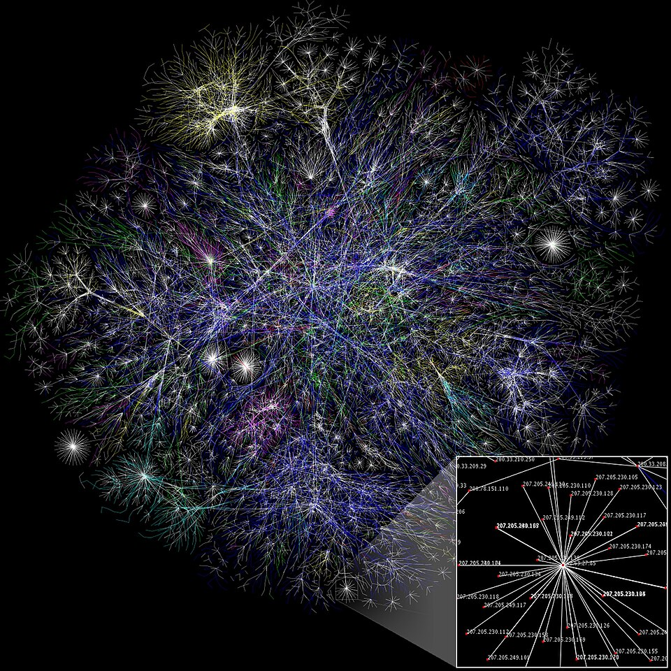

İnternet, dünyadaki milyonlarca bilgisayarın birbirine bağlandığı dev bir ağdır. İlk olarak 1969 yılında ARPANET adıyla birkaç bilgisayar arasında kurulmuştur. Bugün kullandığımız web sayfaları ise 1989 yılında Tim Berners-Lee'nin bulduğu World Wide Web sayesinde ortaya çıkmıştır.
Bilgisayarlar bilgiyi 0 ve 1'lerden oluşan bitlerle saklar. Örneğin 1 kilobayt 1024 bayttır. Günümüzde dünyada 5 milyardan fazla insan interneti kullanmaktadır. Bu yüzden internet hayatımızın vazgeçilmez bir parçası haline gelmiştir.
İnternetin hayatımızı kolaylaştıran birçok faydası vardır. Bunlardan bazıları:
İnternet çok faydalı olsa da aşırı kullanımı sağlığımıza zarar verebilir. Uzun süre ekrana bakmak gözlerimizi yorar, hareketsiz kalmak ise vücudumuzu olumsuz etkiler.
Uzmanlar ekran başında her 20 dakikada bir, 20 saniye boyunca uzağa bakmayı önerir. Ayrıca her saat başı kısa bir mola verip biraz hareket etmek de faydalıdır.
Not: İnternetteki her bilgi doğru değildir. Bir bilgiye inanmadan önce güvenilir birkaç kaynaktan kontrol etmeliyiz.
İnterneti güvenli bir şekilde kullanmak için şunlara dikkat edebilirsiniz:
Farkında olmasak da gün içinde birçok internet hizmetinden yararlanırız. Bunlardan bazıları: